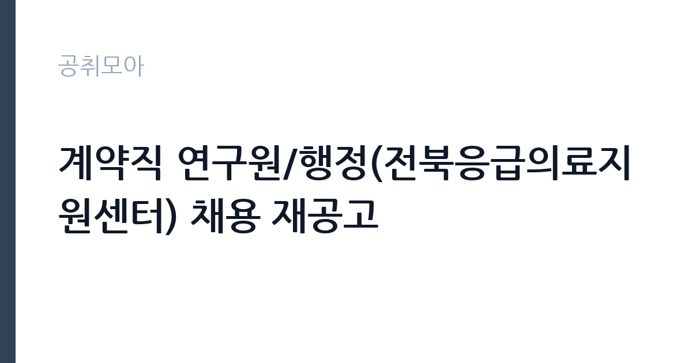

[공공기관] 계약직 연구원/행정(전북응급의료지원센터) 채용 재공고
국립중앙의료원 · 전북 · 마감 2026-11-09 (D-11) · 출처 잡알리오

한눈에 보는 모집 조건
| 기관 | 국립중앙의료원 |
|---|---|
| 공고명 | 계약직 연구원/행정(전북응급의료지원센터) 채용 재공고 |
| 고용형태 | 기간제 |
| 근무지 | 전북 |
| 게시일 | 2026-10-29 |
| 마감일 | 2026-11-09 (D-11) |
지원자격, 이렇게 읽으세요
- 보건학, 의료정보학, 통계학, 경영학 학사 학위 이상 소지자(졸업예정자 미포함)
- 전북특별자치도 근무 가능자
- [학위 인정 범위]
기간제 근로자는 근로계약 기간이 정해진 신분입니다. 계약 기간과 갱신 가능 여부가 근로계약서에 명시되며 기간 만료 시 근로관계가 종료됩니다. 결원 보충이나 특정 사업 기간에 맞춰 채용되는 경우가 많아 업무 범위가 명확합니다. 이번 공고는 국립중앙의료원이 직접 진행하는 자체 전형입니다. 이 직무는 보건학·의료정보학·통계학·경영학 등 지정 학위를 요구하며, 졸업예정자는 인정되지 않는 경우가 있어 학위 수여 증명서로 확인해야 합니다. 학위 인정 범위를 전공명 기준으로 엄격하게 제한하는 공고가 많으므로 본인 전공명이 문구에 포함되는지 확인하십시오. 계약 기간이 정해진 기간제 신분이고, 근무지역 근무 가능 여부가 실질적인 조건입니다. 통계 도구 활용 능력과 보고서 작성 경험이 평가에 반영됩니다. 응시 자격 판단이 애매하면 접수 전에 채용 담당 부서로 문의하는 편이 안전합니다. 동일 직무 경력자와 경쟁하게 되므로, 관련 경험이 있다면 증명서에 업무 내용이 구체적으로 적히도록 요청하십시오. 응시 자격 판단이 애매하다면 접수 전에 채용 담당 부서로 문의하는 편이 안전합니다. 서류 제출 후에는 소명 기회가 없습니다. 이 공고 원문에 적힌 응시 조건 문구는 '보건학, 의료정보학, 통계학, 경영학 학사 학위 이상 소지자(졸업예정자 미포함)' / '졸업증명서 또는 학위수여증명서 상에 해당 학위가 ‘보건학’ 또는 ‘의료정보학’ 또는 ‘통계학’또는 ‘경영학’ 인 경우' / '졸업증명서 또는 학위수여증명서 상 전공(학과)명에 ‘보건’ 또는 ‘의료정보’ 또는 ‘통계’ 또는 ‘경영’이 포함된 경우'입니다. 문구를 그대로 읽고 본인 해당 여부를 하나씩 표시해 두면 서류 단계에서 탈락하는 일을 줄일 수 있습니다.
이 공고의 포인트
이 건은 국립중앙의료원이 같은 시기에 낸 2개 모집분야 가운데 응급의료 지원사업 직무입니다. 다른 직무 공고와 요건이 다르므로 지원 전에 모집분야 표를 대조해야 합니다. 이 공고의 첫 번째 포인트는 고용 형태입니다. 계약 기간이 정해져 있어 근무 종료 시점이 명확합니다. 그만큼 짧은 기간에 어떤 실적을 남길지가 중요해집니다. 두 번째는 업무 범위가 명확하다는 점입니다. 응급의료 지원사업 직무로 채용되므로 배치 이후 담당 업무가 크게 흔들리지 않습니다. 세 번째는 근무지입니다. 전북 지역 근무로 수도권 공고에 비해 지원자 분포가 넓지 않아 상대적으로 경쟁이 분산되는 경우가 있습니다. 처우와 근무 형태가 표로 정리되어 있어 비교해 보기에 편한 공고입니다. 선발 인원은 공고문에 명시되어 있으니 모집분야 항목을 함께 확인하십시오.
전형은 어떻게 진행되나
서류전형과 면접전형 외에 직무수행능력 평가가 붙는 경우가 있습니다. 평가 방식은 공고문에 구체적으로 적혀 있으므로 어떤 항목에 배점이 높은지 먼저 파악하십시오. 면접에서는 지원 동기보다 실제 업무 경험에 대한 질문이 많고, 답변의 구체성이 평가를 가릅니다. 전형 일정은 서류 마감 이후 빠르게 진행되므로 연락 가능한 번호를 정확히 기재하고 문자와 메일을 수시로 확인해야 합니다. 최종 단계에서는 결격사유 조회와 신체검사가 진행됩니다. 면접조 편성과 대기 시간이 공지되므로 당일 도착 시간을 여유 있게 잡으십시오.
원문에서 확인한 전형 방식
1. 계약직 연구원(전북응급의료지원센터) [필수] · 보건학, 의료정보학, 통계학, 경영학 학사 학위 이상 소지자(졸업예정자 미포함) · 전북특별자치도 근무 가능자 [학위 인정 범위] - 졸업증명서 또는 학위수여증명서 상에 해당 학위가 ‘보건학’ 또는 ‘의료정보학’ 또는 ‘통계학’또는 ‘경영학’ 인 경우 - 졸업증명서 또는 학위수여증명서 상 전공(학과)명에 ‘보건’ 또는 ‘의료정보’ 또는 ‘통계’ 또는 ‘경영’이 포함된 경우 2. 계약직 행정(전북응급의료지원센터) [필수] · 보건학, 행정학, 법학, 회계학 학사 학위 이상 소지자(졸업예정자 미포함) · 전북특별자치도 근무 가능자 [학위 인정 범위] - 졸업증명서 또는 학위수여증명서 상에 해당 학위가 ‘보건학’ 또는 ‘행정학’ 또는 ‘법학’또는 ‘회계학’ 인 경우 - 졸업증명서 또는 학위수여증명서 상 전공(학과)명에 ‘보건’ 또는 ‘행정’ 또는 ‘법’ 또는 ‘회계’가 포함된 경우
이런 분께 추천해요
- 지정 학위(보건·의료정보·통계·경영 등)를 취득한 분
- 데이터 분석과 보고서 작성 경험이 있는 분
- 해당 지역에서 근무할 수 있는 분
지원 전 체크리스트
- 응시자격 요건과 경력 기준을 충족하는가 — 경력은 증명서로 입증해야 합니다
- 계약 기간과 근무 시작일·종료일을 확인했는가
- 제출서류 목록을 모두 준비했는가 — 누락 시 서류 단계에서 탈락합니다
- 접수 마감 2026-11-09 이전에 접수 방식을 확인해 제출했는가
모집 일정과 제출 타이밍
2026-10-29에 공고가 올라왔고 접수는 2026-11-09까지입니다. 남은 기간은 11일이며, 이 기간에 자격증 사본과 경력증명서, 주민등록등본 같은 기본 서류를 모두 준비해야 합니다. 경력증명서는 발급에 며칠이 걸리는 경우가 있으니 가장 먼저 신청하십시오. 접수는 온라인과 우편·방문으로 나뉘는 경우가 많고, 우편 접수는 도착 기준으로 판정되므로 마감일 소인만 믿으면 안 됩니다. 면접 일정은 서류 발표 후 개별 통보되므로 제출 후에도 연락을 받을 수 있도록 유지해야 합니다. 마감 이후에는 어떤 사유로도 접수가 인정되지 않으므로 하루 전 제출을 목표로 하십시오.
직무 이해하기: 공공기관
연구·교육 지원 기관은 정책 연구와 조사 분석, 교육 프로그램 운영을 담당합니다. 과제 기반으로 인력을 채용하는 경우가 많아 계약 기간과 성과 목표가 명확히 정해집니다. 보고서와 연구 성과물의 품질 기준이 높습니다. 응급의료지원센터 업무는 지역 응급의료 체계가 제대로 작동하도록 지원하는 일입니다. 응급의료 통계와 이송 자료를 수집·분석하고, 사업 계획과 결과 보고서를 작성합니다. 지역 응급의료기관과 협력 사업을 운영하며 교육·훈련 프로그램을 준비하고, 예산 집행과 정산을 처리합니다. 권역 내 병상·이송 현황을 확인해 보고하는 업무도 포함됩니다. 사업 기간이 정해져 있어 연차별 성과 관리가 중요합니다. 이 직무는 담당 구역이 정해져 있어 근무지에 따라 실제 업무 환경이 달라집니다. 직무 교육은 입사 후 기관 자체 계획에 따라 진행되므로 사전 경험이 없어도 시작할 수 있습니다. 이 건의 근무 대상 지역·부서는 원문 기준 '전북응급의료지원센터'입니다.
자기소개서 작성 팁
지원서는 데이터 분석과 사업 운영 경험을 함께 보여줘야 합니다. 수행한 분석 과제와 사용한 데이터, 도출한 결과를 구체적으로 쓰십시오. 보고서나 사업계획서를 직접 작성한 경험이 있다면 가장 앞에 배치하십시오. 계약 기간 동안 달성할 목표를 수치로 제시하면 준비도가 드러납니다. 문항별 글자 수 제한을 먼저 확인하고, 각 문항의 첫 문장에 결론을 배치하는 방식이 읽기 쉽습니다. 지원 동기는 기관의 어떤 사업에 기여하겠다는 한 문장으로 시작하고, 이어서 본인의 경험을 근거로 붙이십시오. 감점을 피하려면 다른 기관에 보낼 수 있는 범용 문장을 그대로 쓰지 않는 것이 중요합니다. 기관 이름과 사업명이 문장 안에 자연스럽게 들어가야 준비도가 드러납니다.
면접 준비 포인트
면접에서는 사업 이해도와 데이터 처리 능력을 확인합니다. 응급의료 지표가 예년과 다르게 나왔을 때 어떻게 확인할지, 유관 기관 협조가 늦어질 때 어떻게 조정할지 묻습니다. 사용 가능한 통계 도구와 보고서 작성 경험을 구체적으로 답하십시오. 지원 기관의 최근 사업이나 조직 개편 내용을 확인해 두면 지원 동기 질문에서 차이가 납니다. 모르는 질문에 추측으로 답하면 감점 요인이 되므로, 확인 후 답하겠다고 밝히는 편이 안전합니다.
급여·근무조건 읽는 법
알리오(공공기관 경영정보 공개시스템) 2025년 결산 경영공시 기준으로 국립중앙의료원 일반정규직 1인당 평균보수액은 7,865만원, 공시된 신입사원 초임은 3,751만원입니다. 평균보수액은 기본급에 고정수당·실적수당·성과상여금·급여성 복리후생비를 모두 합산한 값이라 월 기본급만 보고 판단하면 실제와 크게 어긋납니다. 이번 공고는 기간제 채용이라 위 정규직 평균보수는 그대로 적용되지 않습니다. 기간제 보수는 기관의 기간제 임금 기준을 따르며 계약 기간이 함께 정해집니다. 국립중앙의료원 계약직 보수는 병원의 계약직 임금 기준을 따르며, 학위와 경력에 따라 책정됩니다. 계약 기간이 정해져 있어 월 보수와 계약 개월 수를 곱한 총액으로 비교해야 하고, 사업 예산에 따라 처우가 정해지는 경우가 있습니다. 정확한 금액은 공고문 처우 항목에서 확인하십시오. 2026년 적용 최저임금은 시급 10,320원, 월 환산 2,156,880원(주 40시간·209시간 기준)입니다. 고용노동부 고시 제2025-47호로 확정된 금액입니다. 공고문에 금액이 제시되지 않은 항목은 원문 보수표나 처우 설명에서 확인해야 하며 확인되지 않은 수치는 쓰지 않는 것이 원칙입니다. 비교할 때는 월 급여뿐 아니라 상여·명절휴가비·복지포인트·초과근무수당까지 포함한 연간 총액으로 계산하십시오. 기간제라면 계약 기간 동안의 총액을, 무기계약이라면 호봉 상승과 정년까지의 누적 소득을 기준으로 판단하는 편이 정확합니다.
자주 묻는 질문
- 선발 인원은 몇 명인가요?
공고문의 모집분야 항목에 직종별 인원이 표로 제시되어 있습니다. 첨부된 공고문 원문에서 확인하십시오. - 근무지는 어디인가요?
전북 지역의 국립중앙의료원 소속 근무지입니다. 세부 주소와 출퇴근 조건은 원문 공고문에서 확인할 수 있습니다. - 보수는 얼마인가요?
채용 신분(기간제)과 기관 임금 규정에 따라 정해지며 구체적인 금액은 공고문 처우 항목에 제시됩니다. 금액이 공개되지 않은 경우에는 원문의 보수표를 확인하십시오.
함께 보면 좋은 공고
[공공기관] 2026년 (재)한국에너지재단 제2차 기간제 채용 공고(채용 제2026-06호) — 마감 2026-11-13[공공기관] 한국고전번역원 2026년 4분기 제2차 직원 신규 채용 — 마감 2026-11-05[공공기관] 계약직 연구원-휴직대체(충남응급의료지원센터) 채용 재공고 — 마감 2026-11-09출처: 잡알리오 공개정보를 바탕으로 공취모아가 정리한 안내글입니다. 모집 조건·일정은 변경될 수 있으니 지원 전 반드시 원문 공고문을 확인하세요. 본 글은 정보 제공용이며 합격을 보장하지 않습니다.